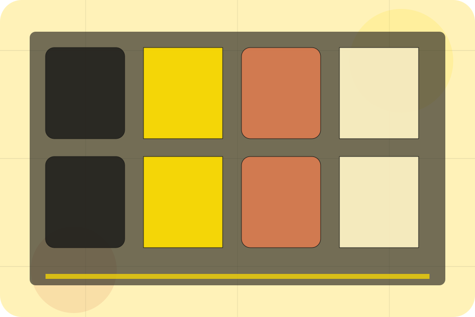
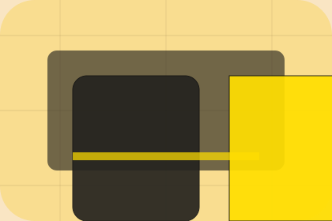

FAQ / 01
FAQ by Linea
FAQ shaped for fashion, apparel & accessories decisions.
FAQ opens as a clear fashion decision hub: what Linea offers, who it helps, why it matters, and which route to take first.
The first screen combines positioning, proof, primary action, and fast internal navigation, so people can act immediately or compare the rest of the faq route with context.
Curated indexProject contextEnquiry path
Oversized campaign hero
Browse the looks
Select the closest route and Linea keeps the next step, proof, and follow-up expectation aligned with taste, status and movement.

FAQ / 02
Questions before you shop the collection
Shipping handles buying doubts directly so visitors can understand timing, fit, limits, and the safest next step.
Answers are short by design: enough to remove hesitation, not so much that the page turns into documentation before the visitor can act.
Explore FAQQuestion
Shipping gives the page a specific angle instead of repeating the navigation label.
Answer
The sunny lookbook cards show what to compare, what to avoid, and what matters most for fashion, apparel & accessories visitors.
Next Step
The final cue points to a useful internal route so the section keeps the journey moving.
FAQ / 03
Questions before you shop the collection
Returns handles buying doubts directly so visitors can understand timing, fit, limits, and the safest next step.
Answers are short by design: enough to remove hesitation, not so much that the page turns into documentation before the visitor can act.
Explore FAQReturns gives the page a specific angle instead of repeating the navigation label.
The sunny lookbook cards show what to compare, what to avoid, and what matters most for fashion, apparel & accessories visitors.
The final cue points to a useful internal route so the section keeps the journey moving.
FAQ / 04
Questions before you shop the collection
Materials handles buying doubts directly so visitors can understand timing, fit, limits, and the safest next step.
Answers are short by design: enough to remove hesitation, not so much that the page turns into documentation before the visitor can act.
Explore FAQQuestion
Materials gives the page a specific angle instead of repeating the navigation label.
Answer
The sunny lookbook cards show what to compare, what to avoid, and what matters most for fashion, apparel & accessories visitors.
Next Step
The final cue points to a useful internal route so the section keeps the journey moving.
FAQ / 05
Questions before you shop the collection
Sizing handles buying doubts directly so visitors can understand timing, fit, limits, and the safest next step.
Answers are short by design: enough to remove hesitation, not so much that the page turns into documentation before the visitor can act.
Explore FAQQuestion
Sizing gives the page a specific angle instead of repeating the navigation label.
Answer
The sunny lookbook cards show what to compare, what to avoid, and what matters most for fashion, apparel & accessories visitors.
Next Step
The final cue points to a useful internal route so the section keeps the journey moving.
FAQ / 06
Questions before you shop the collection
Care handles buying doubts directly so visitors can understand timing, fit, limits, and the safest next step.
Answers are short by design: enough to remove hesitation, not so much that the page turns into documentation before the visitor can act.
Explore FAQQuestion
Care gives the page a specific angle instead of repeating the navigation label.
FAQ / 07
Questions before you shop the collection
Stock handles buying doubts directly so visitors can understand timing, fit, limits, and the safest next step.
Answers are short by design: enough to remove hesitation, not so much that the page turns into documentation before the visitor can act.
Explore FAQQuestion
Stock gives the page a specific angle instead of repeating the navigation label.
Answer
The sunny lookbook cards show what to compare, what to avoid, and what matters most for fashion, apparel & accessories visitors.
Next Step
The final cue points to a useful internal route so the section keeps the journey moving.
FAQ / 08
Questions before you shop the collection
Orders handles buying doubts directly so visitors can understand timing, fit, limits, and the safest next step.
Answers are short by design: enough to remove hesitation, not so much that the page turns into documentation before the visitor can act.
Explore FAQQuestion
Orders gives the page a specific angle instead of repeating the navigation label.
Answer
The sunny lookbook cards show what to compare, what to avoid, and what matters most for fashion, apparel & accessories visitors.
Next Step
The final cue points to a useful internal route so the section keeps the journey moving.
FAQ / 09
Compare service routes
Support explains the practical scope, best-fit situations, and expected outcome so fashion visitors can compare options without decoding jargon.
The section keeps the offer concrete: what is included, who it is best for, what decision it supports, and which linked route gives the deeper detail.
Open ContactBest Fit
Who should use support and when it belongs in the faq journey.
What Changes
The practical benefit visitors should expect after choosing this route.
Deeper Route
Where to compare details, pricing, support, or contact options before committing.
FAQ / 10
Shop Collection
Linea closes the faq route with a clear action, a quick reminder of the value, and a low-friction way to shop the collection.
Visitors who are ready can use the primary action. Visitors who are still comparing can scan the section links, proof, and support routes before they shop the collection.
Shop CollectionThe final block keeps the choice simple: act now, compare one more proof route, or send enough detail for a focused response.
Shop Collectiontaste, status and movement
Shop Collection
A fashion lookbook site with warm yellow, playful scale shifts, collection cards, and sizing routes. FAQ ends with a direct path to shop the collection, plus enough context for visitors who still need to compare.

Shop CollectionImportant notes before you act
Information is provided for planning and should be reviewed for the final client, location, and operating rules.